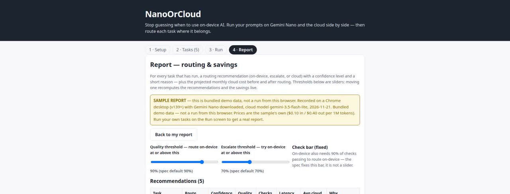

AI Systems Builder · Automation & Digital Product Development
I build practical software end to end with an AI copilot — AI-powered applications, agent infrastructure, automation, and developer tools — and ship real systems: a routing engine with tests and a live deployment, a platform game inside Reddit, a mobile monitor with an honest data layer, a minimal virtual machine, and a vision-analysis prototype with designed fallbacks.
Five projects, each presented at the scale the evidence supports.
Deployed MVP
01
NanoOrCloud
A web app that runs the same task prompt on Gemini Nano and on cloud AI side by side, scores both runs, recommends a route per task, projects monthly savings from routing, and exports the result as a report/JSON. A sample mode lets visitors try it without keys.
Vite
React
TypeScript
Firebase AI Logic

Running application — sample report view, frame from the demo video.Routing flow diagram.
Note: On-device path depends on the browser exposing Gemini Nano.
A daily text-adventure game that lives inside Reddit as a Devvit app, with a fresh explorable sector each day — a client game, a server handling the daily rotation, and a plain-JavaScript prototype carrying the same game modules.
An offline-first personal monitor for Android — track prices, news, stocks, and schedules, with notes, themes, search, statistics, and cloud backup. An Expo Router app with a repository/context/hook data layer, local storage, and a Cloudflare Worker backed by a D1 database. Its live-data service returns no value for unrecognised monitors rather than a fabricated one.
TypeScript (Expo / React Native)
JavaScript worker
SQL (D1)
Cloudflare Worker
Architecture diagram (from the repository).
Note: Deployment unknown — no verified APK, store listing, or live worker URL.
A minimal stack-based virtual machine interpreter built to a bounty specification (ISA v1) with no external dependencies. A single 6,550-byte TypeScript file: an opcode table, bounded stacks, memory, and output, a step cap, and a runner that executes input instances and writes per-instance output and exit files.
TypeScript
Node built-ins only
Stack-machine flow diagram.
// Tiny stack VM (ISA v1): runs every instance in the input dir and writes
// stdout.bin + exit.txt per instance in the output dir. Node built-ins only;
// nothing but the input files is read, so reruns answer alike.
import { mkdirSync, readdirSync, readFileSync, writeFileSync } from 'node:fs';
import { join } from 'node:path';
const IN = process.env.MAKEFUN_INPUT_DIR ?? '/input';
const OUT = process.env.MAKEFUN_OUTPUT_DIR ?? '/output';
// Opcode table: hex byte, immediate bytes, pops, pushes. -1 is no opcode.
const IMM = new Int8Array(256).fill(-1);
const POPS = new Uint8Array(256);
const PUSH = new Uint8Array(256);
for (const e of '00,0,0,0;01,1,0,1;02,4,0,1;03,0,1,0;04,0,1,2;05,0,2,2;06,0,2,3;07,0,3,3;10,0,2,1;11,0,2,1;12,0,2,1;13,0,2,1;14,0,2,1;15,0,2,1;16,0,2,1;17,0,1,1;18,0,2,1;19,0,2,1;1a,0,2,1;1b,0,1,1;1c,0,2,1;1d,0,2,1;1e,0,2,1;20,0,2,1;21,0,2,1;22,0,2,1;30,2,0,0;31,2,1,0;32,2,1,0;33,2,0,0;34,0,0,0;40,0,1,1;41,0,2,0;50,0,1,0;51,0,1,0;52,0,0,1;53,0,1,0'.split(';')) {
const [h, i, a, b] = e.split(',');
const o = parseInt(h, 16);
IMM[o] = +i;
POPS[o] = +a;
PUSH[o] = +b;
}
function execute(prog, input) {
const n = prog.length;
const st = new Int32Array(256);
const cs = new Int32Array(64);
const mem = new Int32Array(256);
const out = new Uint8Array(65536);
let sp = 0, cp = 0, olen = 0, inAt = 0, pc = 0, steps = 0;
Excerpt — lines 1–28 of main.ts (6,550 bytes total).
Note: Minimal ISA, single file, empty README; grading outcome unknown.
Turns phone screenshots into a short insight: an emotional profile, a chaos meter (0–1), an alter-ego line (max 80 characters), and a recap (max 200 characters). An upload zone, five insight components, and an API route that posts one uploaded image per request to Gemini (gemini-2.0-flash, 8-second timeout, key from environment). Cap: 5 screenshots per completed analysis. When no key is configured, or the model call fails, times out, or returns bad JSON, the app returns a hardcoded fallback insight with HTTP 200 and a "generated with care" badge instead of erroring.
A small utility kit, not a product: an Express and TypeScript form to Telegram notification flow, with honeypot and rate limiting, validation, a health endpoint, a Netlify wrapper, and one test.
Two competitions, public scores verified from the command line under the account dokumenhilang.
Name That LLM — public score 0.514 (ref 58772577). Approach: DeBERTa ensembles with harvest stacking.
Squares in Squares — public score 27.4888439686, lower is better (ref 58787047). Approach: annealing with independent SAT verification.
Note: No rank claims. Private-leaderboard results unknown.
Security research: reports submitted through official channels, details withheld per program disclosure policy.
03 / About
Self-taught and shipping real systems.
Nur Toha Mubarak, 23, Jakarta Utara. Self-taught AI Systems Builder & Digital Product Developer. He builds AI-powered applications, agent infrastructure, automation, and developer tools, working AI-assisted and shipping real systems: a routing engine with tests and a live deployment, a platform game inside Reddit, a mobile monitor with an honest data layer, a minimal virtual machine, and a vision-analysis prototype with designed fallbacks.
Employment: HSE Fire Watcher (PT Bina Karya Prima via an outsourcing company, Jan 2024–present, Kota Bekasi) — background, not the technical identity. Education: SMAN 110 Jakarta Utara.